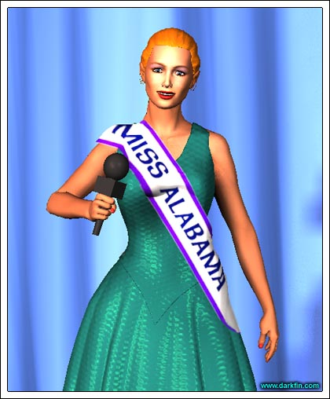

MC Please welcome our next contestant, Kylee Shepperton from New Hope, Alabama... ladies and gentlemen, KYLEE
Kylee (Waving) Good evening, everyone!
Kylee(In her mind) THANK GOD no one found out my real name is Kylee Bochner and that my brother is constantly in and out of prison
MC New Hope, such a great name for a city!
Kylee (Big smile) Yes, it sure is - I suppose you could say it gave me a lot of HOPE for all of my endeavors
Kylee(In her mind) "Cesspool Central" would be more appropriate and the only hope it gave me was "Please God, get me the fuck out of here!"

MC That's wonderful - so, tell us a little about your life there
Kylee Life was wonderful in New Hope, there was always singing and dancing and laughing in our house - a house full of family warmth and love
Kylee(In her mind) Actually, there was more screaming and crying, a trailer full of despair as well as mental, physical and sexual abuse
MC Fantastic - it says here that you are a senior at the University of Alabama, is that correct?
Kylee (Raising her fist) GO CRIMSON TIDE
Kylee(In her mind) I WISH I had gone to Auburn
MC And what is your field of study?
Kylee Communications with a minor in dance
Kylee(In her mind) Also known as the "clips, hips and lips special"
MC Why Communications?
Kylee I believe that communication is the common root we all share as a human race and when we learn to overcome obstacles and achieve greater communication, the result is better understanding and world peace... I want to be a part of that
Kylee(In her mind) I JUST GODDAMN BLEW IT
MC Ah, it says here that your childhood news idol was Jessica Savitch of NBC?
Kylee That's right, when I was a little girl, my momma used to point to the TV and say "Someday, Honey, I hope you'll be just like her!"
Kylee(In her mind) She'd also say "For the love of God, just don't end up a checker at the Jitney-Jungle!"
MC Tell us a little more about your idol
Kylee She was a real pioneer for women in broadcast news
Kylee(In her mind) She was also was a burnt-out coke whore who died in a tragic car crash
MC And why did you admire her?
Kylee Besides her career achievements, I also admired Jessica for her tenacity and determination in a male-dominated field
Kylee(In her mind) And she had pretty eyes
MC (Nervous) Heh, but it's not dominated like that anymore, is it?
Kylee (Shaking her head) Oh no, not at all!
Kylee(In her mind) Lookie, I just lied to America and they all know it!
MC Tell us about your charity, "Dance Away Sorrow, Dance Away Sadness"
Kylee Since dance is my specialty, I helped start DASDAS as a way to share my joy with those who normally would not participate in such activities - it gives me great pleasure and fulfillment when I show deaf kids how to bust a move
Kylee(In her mind) It was either them or rumba with the smelly old people at the home
MC That is truly fascinating, so your students can actually feel the music?
Kylee They sure can!
Kylee(In her mind) I once turned on the washing machine and told them it was Pearl Jam
MC We're coming down to our last few questions
Kylee Great!
Kylee(In her mind) How much longer is this bullshit gonna take?
MC As Miss America, your duties involve a whirl-wind tour around our great nation for a whole year, meeting fascinating people and doing important work - are you prepared for this?
Kylee Absolutely, I can't wait to share the ideals of the Miss America Pageant with everyone and help out where I'm needed!
Kylee(In her mind) A whole year of opening up new shopping centers, visiting sick children and banging overseas servicemen, I CAN'T WAIT
MC One of the highlights of the Miss America Tour is getting to ride the giant turkey in Macy's Thanksgiving Day Parade, looking forward to that?
Kylee It would be an honor
Kylee(In her mind) It's not the first time I'd have to straddle an old bird and it sure as hell won't be the last
MC (Looking out at the audience) I understand you have your mother and your grandfather, Boopaw, as your cheering section tonight?
Kylee Of course!
Kylee(In her mind) DAMN, I paid security to keep the skank and the old coot out!
MC Boopaw?
Kylee Heh, when I was a tiny thing, my granddaddy would take his dentures out, put them in his hand and chase me around the yard screaming "BOO" - so, I called him Boopaw
Kylee(In her mind) Bastard has given me nightmares for life
MC How adorable - and now I have to ask for all of the single men in the audience, is there a boyfriend?
Kylee No, not at this time
Kylee(In her mind) Don't forget the married men, Buddy - I'm guessing in a few hours I'll have plenty to pick from, maybe even a sheik or two
MC Final question, if you wished for one thing to come true, what would it be and why?
Kylee (Thinks for a moment) Well, besides the obvious of no more war and famine, I would have to say that I would wish for everyone to spend a few minutes in my heart so they, too, could participate in this glorious, one-of-a-kind experience
Kylee(In her mind) And so they could hear the REAL answers kicking around in my head
MC What a great answer, thank you, Kylee - ladies and gentlemen, Miss Alabama, Kylee Shepperton!
Kylee Thank you and God Bless America!
Kylee(In her mind as she walks off) No matter what happens here tonight, I have a standing offer to join KCON because I agreed to let the station manager screw me in the ass